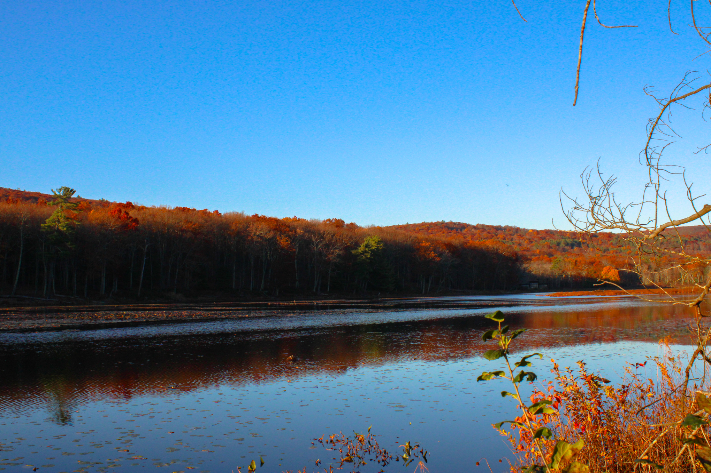
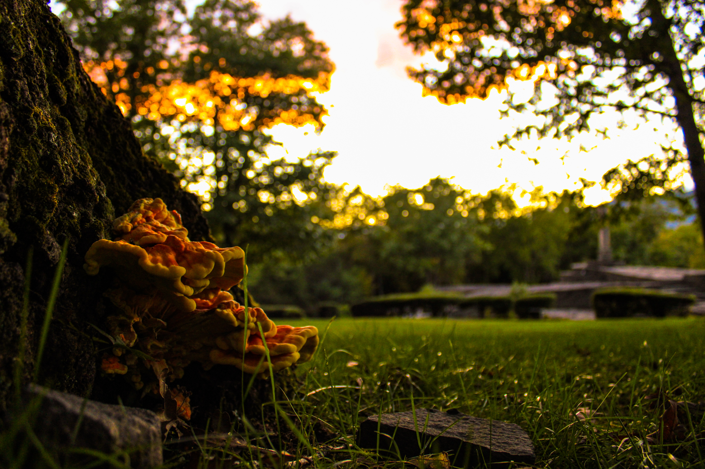

Tyler Petruzzo's Portfolio
name="Tyler Petruzzo's Portfolio" content="Multimedia portfolio of photography, videos and audio.
These are samples of all of the work of Tyler Petruzzo and what experience he can bring to any place of employment." />
Tyler Petruzzo's Portfolio
My name is Tyler Matthew Petruzzo. I grew up in Rhinebeck, New York. I went to school over in Red Hook, the next town over, and graduated from high school there with an Advanced Regents Diploma.
I hope it is enjoyable.
The photos posted here were all taken in THE HUDSON VALLEY in upstate New York.

Rosendale, New York, Hudson Valley, 2023

Opus 40, Saugerties, New York, 2023